More Raster
The R Script associated with this page is available here. Download this file and open it (or copy-paste into a new script) with RStudio so you can follow along.
Libraries
library(knitr)
library(dplyr)
library(tidyr)
library(ggplot2)
library(raster)
library(rasterVis)
library(scales)
library(rgeos)Today’s question
How will future (projected) sea level rise affect Bangladesh?
- How much area is likely to be flooded by rising sea level?
- How many people are likely to be displaced?
- Will sea level rise affect any major population centers?
Bangladesh
getData("ISO3")%>%
as.data.frame%>%
filter(NAME=="Bangladesh")## ISO3 NAME
## 1 BGD BangladeshDownload Bangladesh Border
Often good idea to keep data in separate folder. You will need to edit this for your machine!
datadir="~/Downloads/data"
if(!file.exists(datadir)) dir.create(datadir, recursive=T)Download country border.
bgd=getData('GADM', country='BGD', level=0,path = datadir)
plot(bgd)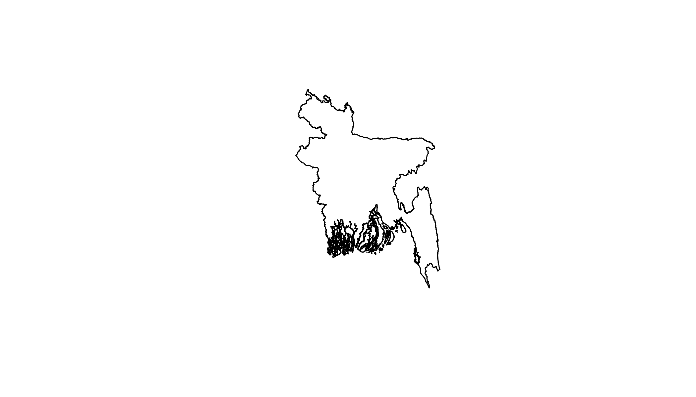
Topography
SRTM Elevation data with getData() as 5deg tiles.
bgdc=gCentroid(bgd)%>%coordinates()
dem1=getData("SRTM",lat=bgdc[2],lon=bgdc[1],path=datadir)
plot(dem1)
plot(bgd,add=T)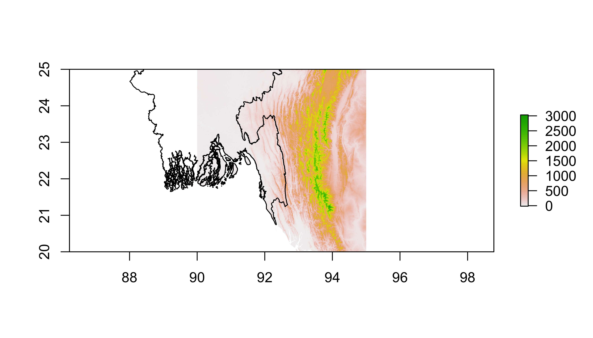
Mosaicing/Merging rasters
Download the remaining necessary tiles
dem2=getData("SRTM",lat=23.7,lon=85,path=datadir)Use merge() to join two aligned rasters (origin, resolution, and projection). Or mosaic() combines with a function.
dem=merge(dem1,dem2)
plot(dem)
plot(bgd,add=T)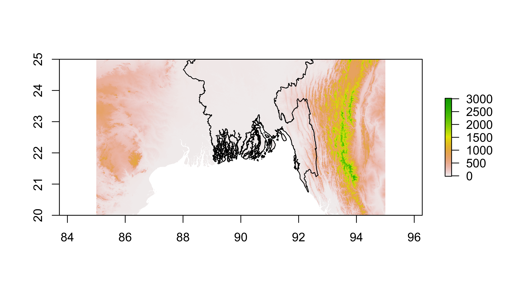
Saving/exporting rasters
Beware of massive temporary files!
inMemory(dem)## [1] FALSEdem@file@name## [1] "/private/var/folders/lg/gz_jcfk5617dlpzdtg23x3rh0000gn/T/RtmpNAxz5l/raster/r_tmp_2016-10-23_204503_5034_04978.grd"file.size(sub("grd","gri",dem@file@name))*1e-6## [1] 144.036showTmpFiles()## r_tmp_2016-10-23_204503_5034_04978rasterOptions()## format : raster
## datatype : FLT8S
## overwrite : FALSE
## progress : none
## timer : FALSE
## chunksize : 1e+07
## maxmemory : 1e+08
## tmpdir : /var/folders/lg/gz_jcfk5617dlpzdtg23x3rh0000gn/T//RtmpNAxz5l/raster//
## tmptime : 168
## setfileext : TRUE
## tolerance : 0.1
## standardnames : TRUE
## warn depracat.: TRUE
## header : noneSet with rasterOptions(tmpdir = "/tmp")
Saving raster to file: two options
Save while creating
dem=merge(dem1,dem2,filename=file.path(datadir,"dem.tif"),overwrite=T)Or after
writeRaster(dem, filename = file.path(datadir,"dem.tif"))WriteRaster formats
| Filetype | Long name | Default extension | Multiband support |
|---|---|---|---|
| raster | ‘Native’ raster package format | .grd | Yes |
| ascii | ESRI Ascii | .asc | No |
| SAGA | SAGA GIS | .sdat | No |
| IDRISI | IDRISI | .rst | No |
| CDF | netCDF (requires ncdf) |
.nc | Yes |
| GTiff | GeoTiff (requires rgdal) | .tif | Yes |
| ENVI | ENVI .hdr Labelled | .envi | Yes |
| EHdr | ESRI .hdr Labelled | .bil | Yes |
| HFA | Erdas Imagine Images (.img) | .img | Yes |
rgdal package does even more…
Crop to Coastal area of Bangladesh
# Crop using border polygon
# dem=crop(dem,bgd,filename=file.path(datadir,"dem_bgd.tif"),overwrite=T)
# Or crop to a lat-lon box
dem=crop(dem,extent(89,91.5,21.5,24),filename=file.path(datadir,"dem_bgd.tif"),overwrite=T)
plot(dem); plot(bgd,add=T)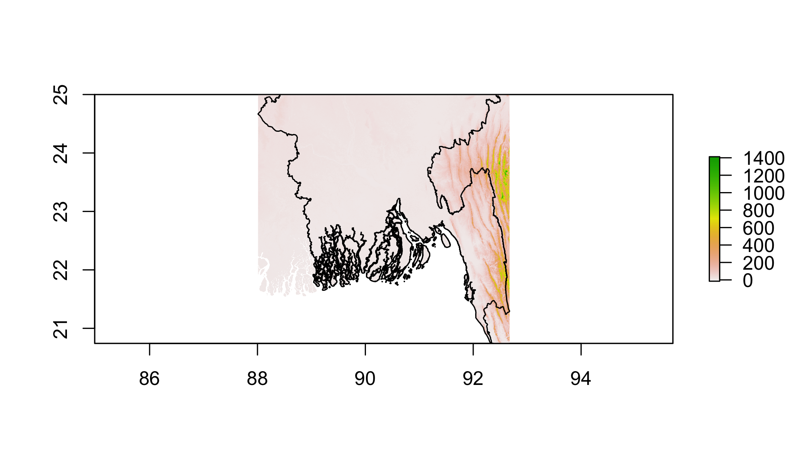
Use ggplot
gplot(dem,max=1e5)+geom_tile(aes(fill=value))+
scale_fill_gradientn(
colours=c("red","yellow","grey30","grey20","grey10"),
trans="log1p",breaks= log_breaks(n = 5, base = 10)(c(1, 1e3)))+
coord_equal(ylim=c(21.5,24))+
geom_path(data=fortify(bgd),
aes(x=long,y=lat,order=order,group=group),size=.5)## Regions defined for each Polygons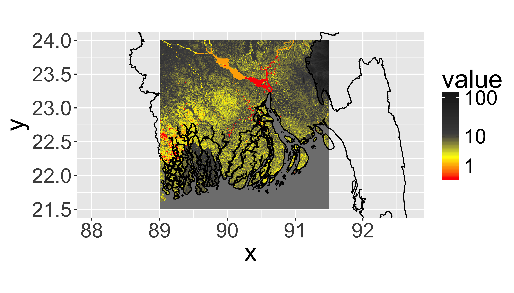
Terrain analysis (an aside)
Terrain analysis options
terrain() options:
- slope
- aspect
- TPI (Topographic Position Index)
- TRI (Terrain Ruggedness Index)
- roughness
- flowdir
Use a smaller region:
reg1=crop(dem1,extent(93.8,94,21.05,21.15))
plot(reg1)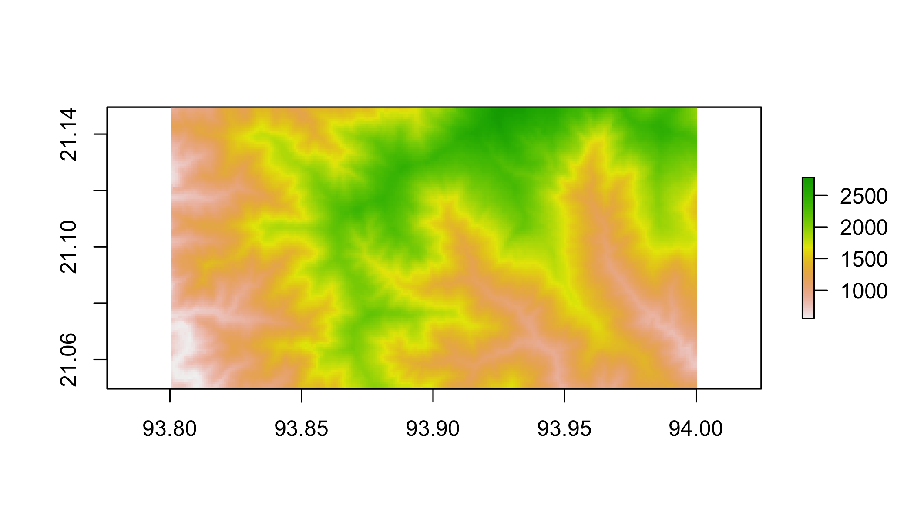
The terrain indices are according to Wilson et al. (2007), as in gdaldem.
Calculate slope
slope=terrain(reg1,opt="slope",unit="degrees")
plot(slope)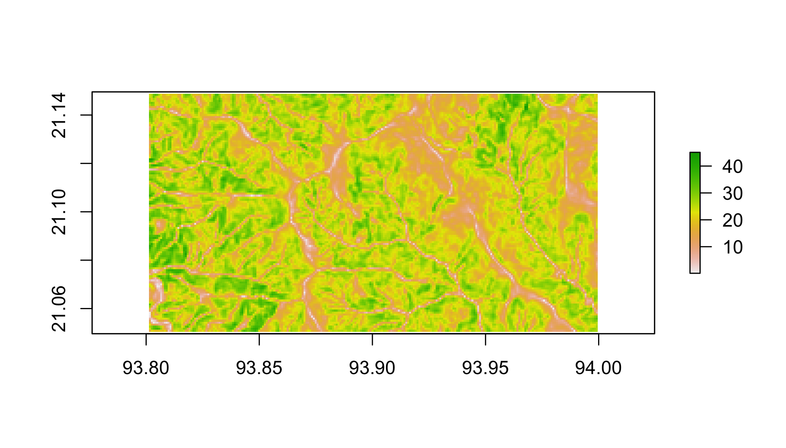
Calculate aspect
aspect=terrain(reg1,opt="aspect",unit="degrees")
plot(aspect)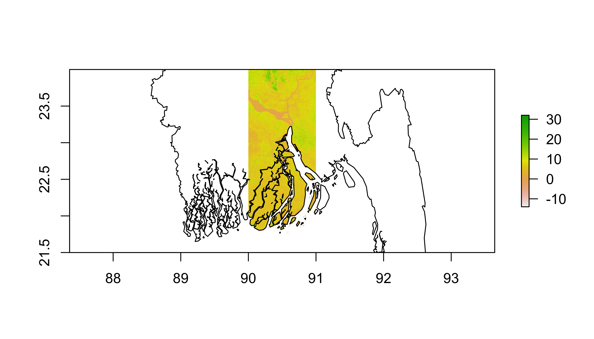
TPI (Topographic Position Index)
Difference between the value of a cell and the mean value of its 8 surrounding cells.
tpi=terrain(reg1,opt="TPI")
gplot(tpi,max=1e6)+geom_tile(aes(fill=value))+
scale_fill_gradient2(low="blue",high="red",midpoint=0)+
coord_equal() Negative values indicate valleys, near zero flat or mid-slope, and positive ridge and hill tops
Negative values indicate valleys, near zero flat or mid-slope, and positive ridge and hill tops
Your turn
- Identify all the pixels with a TPI less than -15 or greater than 15.
- Use
plot()to:- plot elevation for this region
- overlay the valley pixels in blue
- overlay the ridge pixels in red
Hint: use transparent to plot a transparent pixel and add=T to add a layer to an existing plot.
plot(reg1)
plot(tpi>15,col=c("transparent","red"),add=T,legend=F)
plot(tpi<(-15),col=c("transparent","blue"),add=T,legend=F)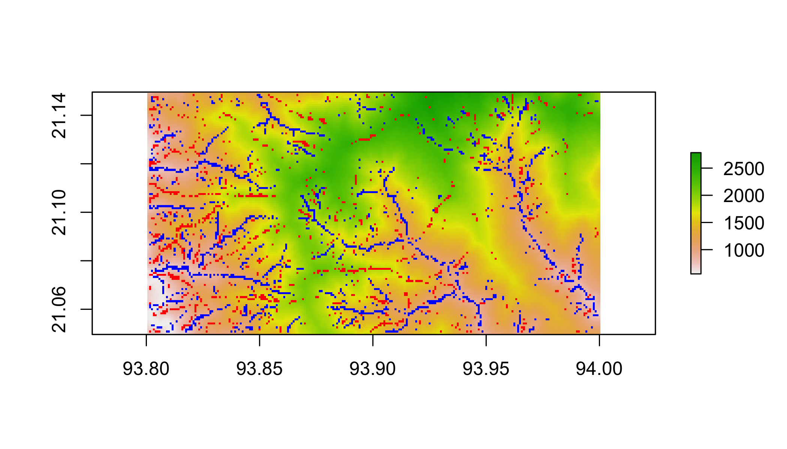
#OR (ggplot solution, sort of)
rcl=matrix(c(-Inf,-15,1,
-15,15,2,
15,Inf,3),byrow=T,nrow=3)
regclass=reclassify(tpi,rcl)
gplot(regclass,max=1e6)+geom_tile(aes(fill=value))+
scale_fill_gradient2(low="blue",high="red",midpoint=2)+
coord_equal()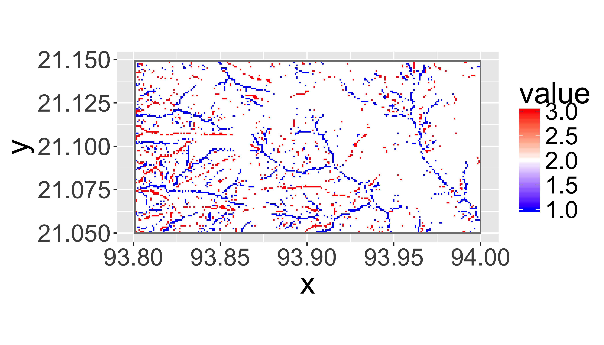
TRI (Terrain Ruggedness Index)
Mean of the absolute differences between the value of a cell and the value of its 8 surrounding cells.
tri=terrain(reg1,opt="TRI")
plot(tri)
Roughness
Difference between the maximum and the minimum value of a cell and its 8 surrounding cells.
rough=terrain(reg1,opt="roughness")
plot(rough)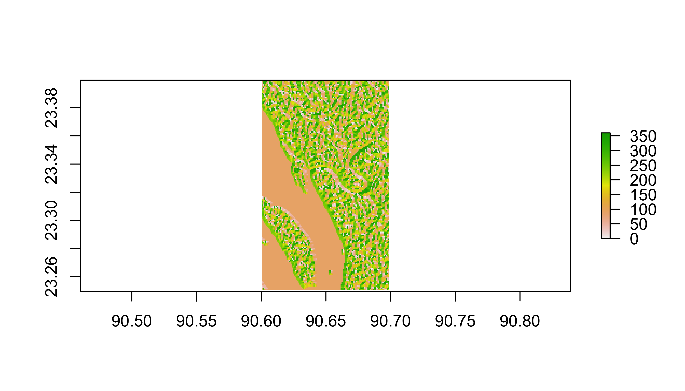
Hillshade (pretty…)
Compute from slope and aspect (in radians). Often used as a backdrop for another semi-transparent layer.
hs=hillShade(slope*pi/180,aspect*pi/180)
plot(hs, col=grey(0:100/100), legend=FALSE)
plot(reg1, col=terrain.colors(25, alpha=0.5), add=TRUE)
Flow Direction
Flow direction (of water), i.e. the direction of the greatest drop in elevation (or the smallest rise if all neighbors are higher).
Encoded as powers of 2 (0 to 7). The cell to the right of the focal cell ‘x’ is 1, the one below that is 2, and so on:
| 32 | 64 | 128 |
|---|---|---|
| 16 | x | 1 |
| 8 | 4 | 2 |
flowdir=terrain(reg1,opt="flowdir")
plot(flowdir)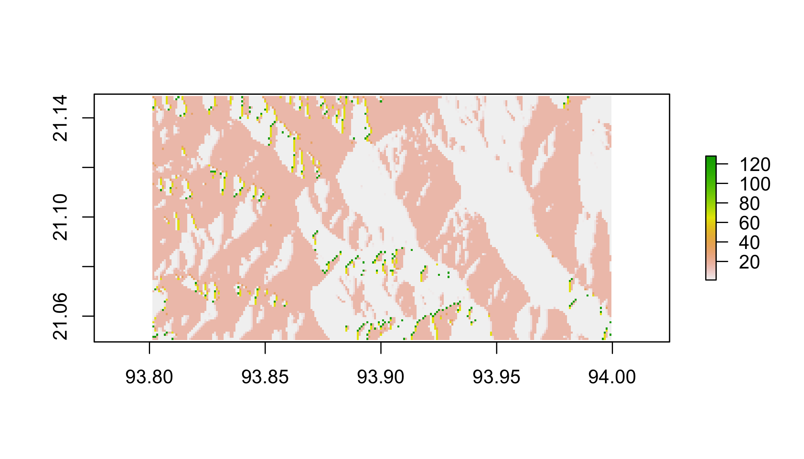 Much more powerful hydrologic modeling in GRASS GIS
Sea Level Rise
Global SLR Scenarios
slr=data.frame(year=2100,
scenario=c("RCP2.6","RCP4.5","RCP6.0","RCP8.5"),
low=c(0.26,0.32,0.33,0.53),
high=c(0.54,0.62,0.62,0.97))
kable(slr)| year | scenario | low | high |
|---|---|---|---|
| 2100 | RCP2.6 | 0.26 | 0.54 |
| 2100 | RCP4.5 | 0.32 | 0.62 |
| 2100 | RCP6.0 | 0.33 | 0.62 |
| 2100 | RCP8.5 | 0.53 | 0.97 |
Raster area
1st Question: How much area is likely to be flooded by rising sea levels?
WGS84 data is unprojected, must account for cell area (in km^2)…
area=raster::area(dem)
plot(area)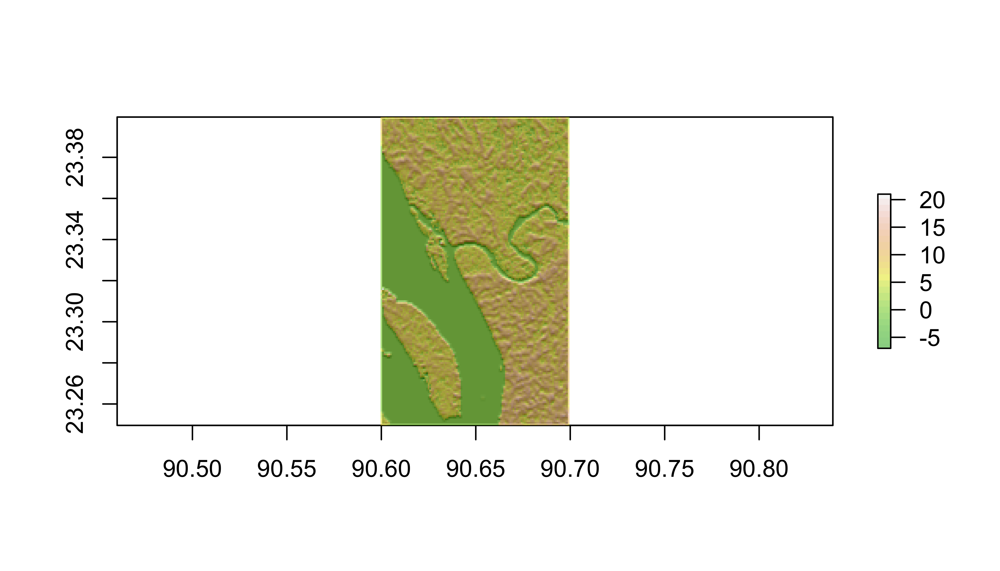
Your Turn
- How much area is likely to be flooded by rising sea levels for two scenarios:
- 0.26m SLR and 2.5m surge (2.76 total)
- 0.97 SLR and 10m surge (10.97 total)
Steps:
- Identify which pixels are below thresholds
- Multiply by cell area
- Use
cellStats()to calculate potentially flooded areas.
Identify pixels below thresholds
flood1=dem<=2.76
flood2=dem<=10.97
plot(flood2,col=c("transparent","darkred"))
plot(flood1,col=c("transparent","red"),add=T)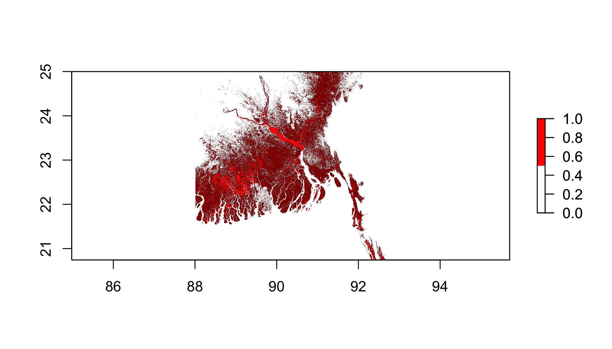
Multiply by area and sum
flood1_area=flood1*area
flood2_area=flood2*area
cellStats(flood1_area,sum)## [1] 3843.93cellStats(flood2_area,sum)## [1] 40818.03Reclassification
Another useful function for raster processing is reclass().
rcl=matrix(c(-Inf,2.76,1,
2.76,10.97,2,
10.97,Inf,3),byrow=T,ncol=3)
rcl## [,1] [,2] [,3]
## [1,] -Inf 2.76 1
## [2,] 2.76 10.97 2
## [3,] 10.97 Inf 3regclass=reclassify(dem,rcl)
gplot(regclass,max=1e5)+
geom_tile(aes(fill=as.factor(value)))+
scale_fill_manual(values=c("red","orange","blue"),
name="Flood Class")+
coord_equal()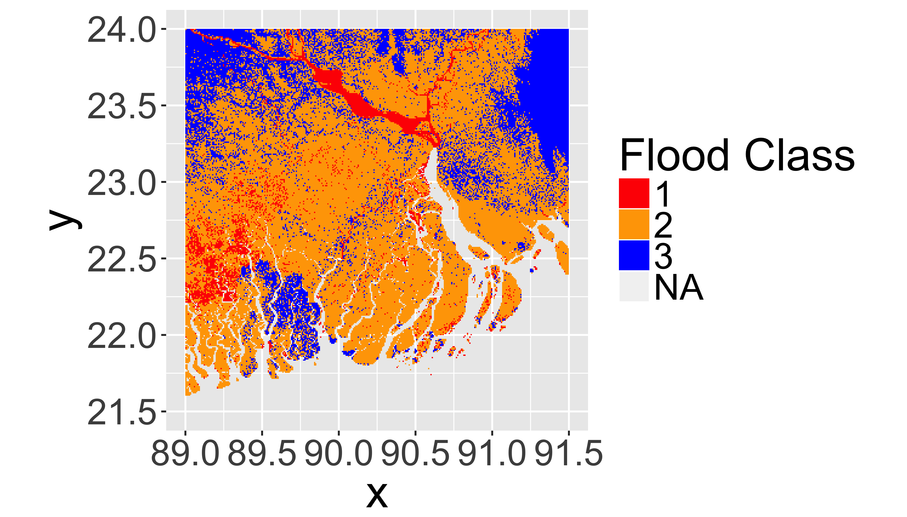
Or, do reclassification ’on the fly in the plotting function
gplot(dem,max=1e5)+
geom_tile(aes(fill=cut(value,c(-Inf,2.76,10.97,Inf))))+
scale_fill_manual(values=c("red","orange","blue"),
name="Flood Class")+
coord_equal()
Socioeconomic Data
Socioeconomic Data and Applications Center (SEDAC) http://sedac.ciesin.columbia.edu 
- Population
- Pollution
- Energy
- Agriculture
- Roads
Gridded Population of the World
Data not available for direct download (e.g. download.file())
- Log into SEDAC with an Earth Data Account http://sedac.ciesin.columbia.edu
- Download Population Density Grid for 2015

Load population data
Use raster() to load a raster from disk.
pop_global=raster(file.path(datadir,"gpw-v4-population-density-2015/gpw-v4-population-density_2015.tif"))
plot(pop_global)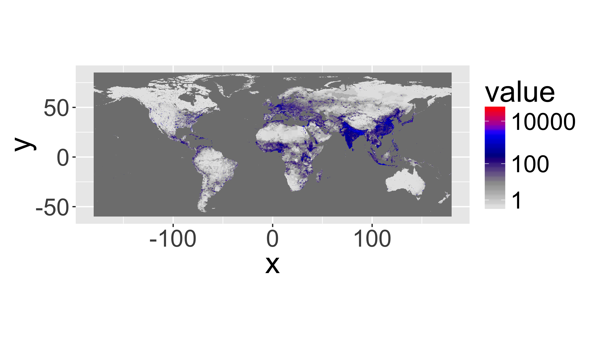
A nicer plot…
gplot(pop_global,max=1e5)+geom_tile(aes(fill=value))+
scale_fill_gradientn(
colours=c("grey90","grey60","darkblue","blue","red"),
trans="log1p",breaks= log_breaks(n = 5, base = 10)(c(1, 1e5)))+
coord_equal()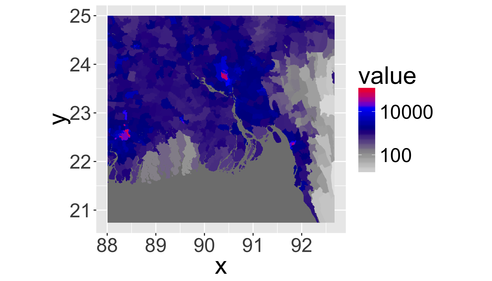
Crop to region with the dem object
pop=pop_global%>%
crop(dem)
gplot(pop,max=1e5)+geom_tile(aes(fill=value))+
scale_fill_gradientn(colours=c("grey90","grey60","darkblue","blue","red"),
trans="log1p",breaks= log_breaks(n = 5, base = 10)(c(1, 1e5)))+
coord_equal()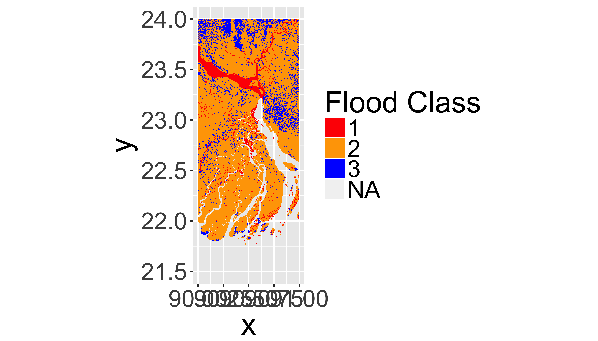
Resample to DEM
Compare the resolution and origin of pop2 and dem.
pop## class : RasterLayer
## dimensions : 300, 300, 90000 (nrow, ncol, ncell)
## resolution : 0.008333333, 0.008333333 (x, y)
## extent : 89, 91.5, 21.5, 24 (xmin, xmax, ymin, ymax)
## coord. ref. : +proj=longlat +datum=WGS84 +no_defs +ellps=WGS84 +towgs84=0,0,0
## data source : in memory
## names : gpw.v4.population.density_2015
## values : 97.13571, 154258.4 (min, max)dem## class : RasterLayer
## dimensions : 3000, 3000, 9e+06 (nrow, ncol, ncell)
## resolution : 0.0008333333, 0.0008333333 (x, y)
## extent : 88.99958, 91.49958, 21.49958, 23.99958 (xmin, xmax, ymin, ymax)
## coord. ref. : +proj=longlat +datum=WGS84 +no_defs +ellps=WGS84 +towgs84=0,0,0
## data source : /Users/adamw/Downloads/data/dem_bgd.tif
## names : dem_bgd
## values : -27, 152 (min, max)res(pop)## [1] 0.008333333 0.008333333res(dem)## [1] 0.0008333333 0.0008333333origin(pop)## [1] 0 0origin(dem)## [1] -0.000416061 -0.000416207# Look at average cell area in km^2
cellStats(raster::area(pop),"mean")## [1] 0.7886268cellStats(raster::area(dem),"mean")## [1] 0.007886292So to work with these rasters (population and elevation), it is easiest to “adjust” them to have the same resolution. But there is no good way to do this. Do you aggregate the finer raster or resample the coarser one?
Assume equal density within each grid cell and resample
pop_fine=pop%>%
resample(dem,method="bilinear")
gplot(pop_fine,max=1e5)+geom_tile(aes(fill=value))+
scale_fill_gradientn(
colours=c("grey90","grey60","darkblue","blue","red"),
trans="log1p",breaks= log_breaks(n = 5, base = 10)(c(1, 1e5)))+
coord_equal()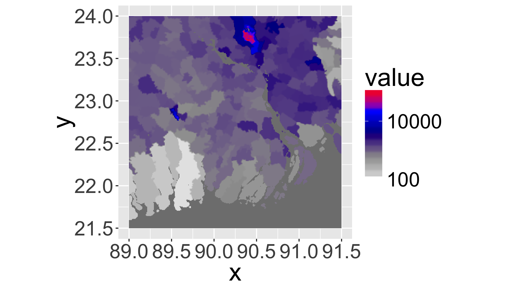
Your turn
How many people are likely to be displaced?
Steps:
- Multiply flooded area (
flood2) x population density x area - Summarize with
cellStats() - Plot a map of the number of people potentially affected by
flood2
For the fine resolution population data
floodpop2=flood2_area*pop_fine
cellStats(floodpop2,sum)## [1] 50587408Number of potentially affected people across the region.
gplot(floodpop2,max=1e6)+geom_tile(aes(fill=value))+
scale_fill_gradientn(
colours=c("grey90","grey60","darkblue","blue","red"),
trans="log1p",breaks= log_breaks(n = 5, base = 10)(c(1, 1e4)))+
coord_equal()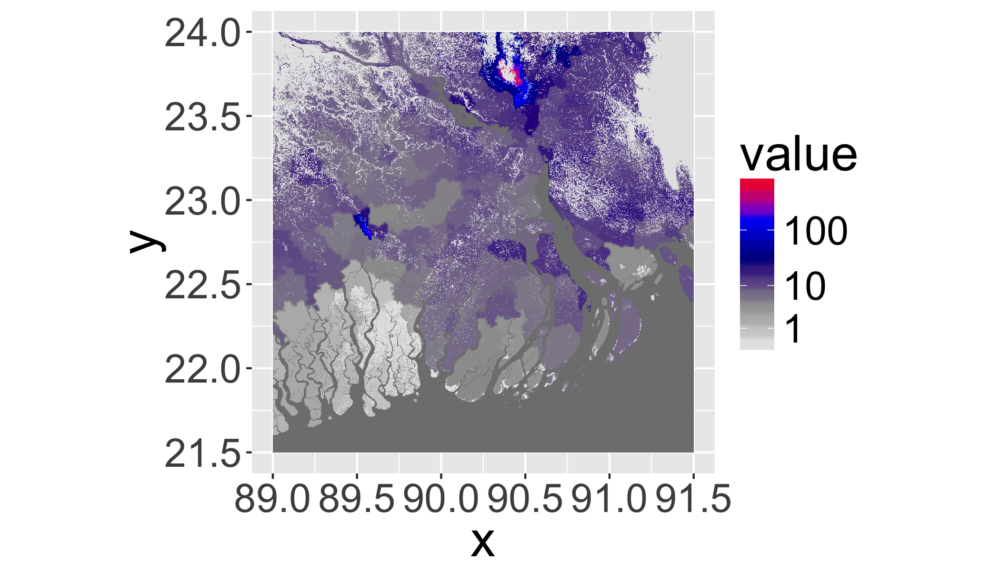
Or resample elevation to resolution of population: 1. First aggregate to approximate spatial resolution 2. Resample to align grids perfectly
res(pop)/res(dem)## [1] 10 10dem_coarse=dem%>%
aggregate(fact=10,fun=min,expand=T)%>%
resample(pop,method="bilinear")For the coarse resolution data
flood_coarse=dem_coarse<=10.97
dem_coarse_area=area(dem_coarse)
flood_coarse_area=flood_coarse*dem_coarse_area
floodpop_coarse=flood_coarse_area*pop
cellStats(floodpop_coarse,sum)## [1] 71478698Raster Distances
distance() calculates distances for all cells that are NA to the nearest cell that is not NA.
popcenter=pop>5000
popcenter=mask(popcenter,popcenter,maskvalue=0)
plot(popcenter,col="red",legend=F)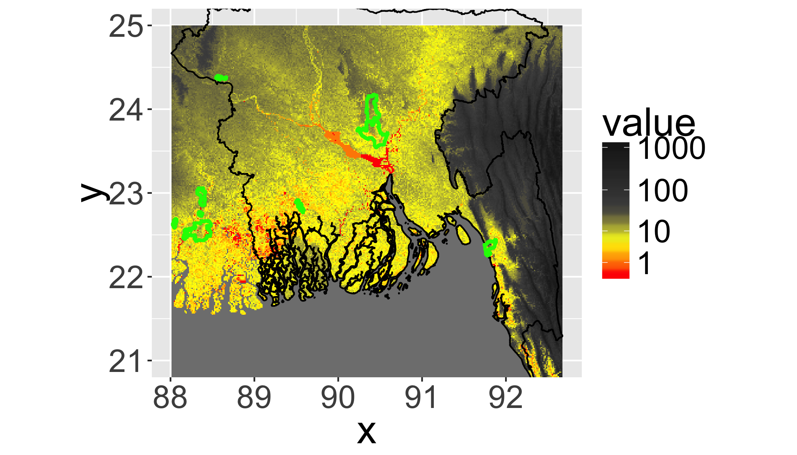
In meters if the RasterLayer is not projected (+proj=longlat) and in map units (typically also meters) when it is projected.
popcenterdist=distance(popcenter)
plot(popcenterdist)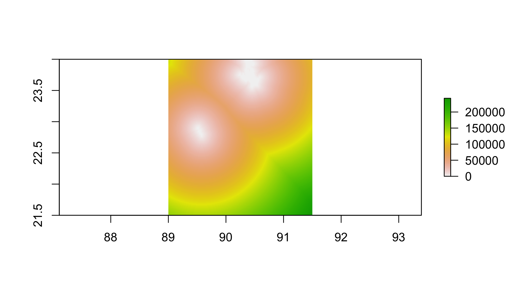
Your Turn
Will sea level rise affect any major population centers?
Steps:
- Resample
popcenterto resolution ofdemusingmethod=ngb - Identify
popcenterareas that flood according toflood2.
Will sea level rise affect any major population centers?
popcenter2=resample(popcenter,dem,method="ngb")
floodpop2= flood2==1 & popcenter2
floodpop2=mask(floodpop2,floodpop2,maskval=0)
plot(flood2);plot(floodpop2,add=T,col="red",legend=F);plot(bgd,add=T)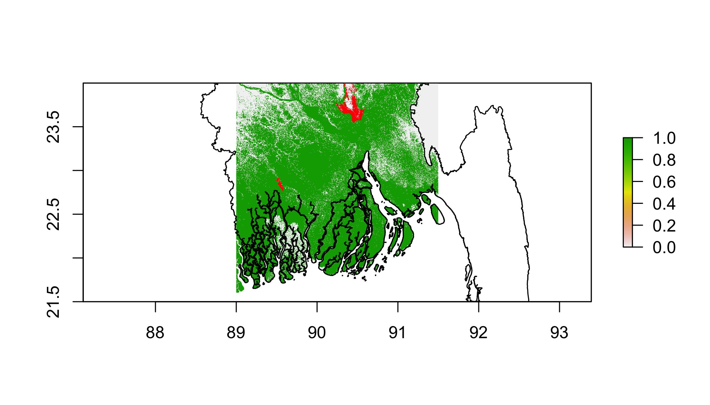
Vectorize raster
vpop=rasterToPolygons(popcenter, dissolve=TRUE)
gplot(dem,max=1e5)+geom_tile(aes(fill=value))+
scale_fill_gradientn(
colours=c("red","yellow","grey30","grey20","grey10"),
trans="log1p",breaks= log_breaks(n = 5, base = 10)(c(1, 1e3)))+
coord_equal(ylim=c(21,25))+
geom_path(data=fortify(bgd),aes(x=long,y=lat,order=order,group=group),size=.5)+
geom_path(data=fortify(vpop),aes(x=long,y=lat,order=order,group=group),size=1,col="green")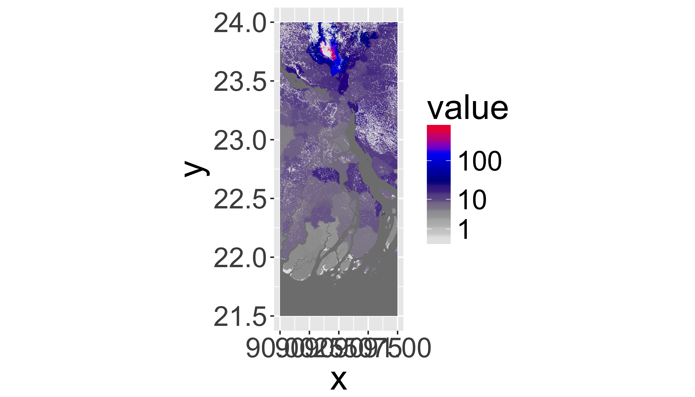 Warning: very slow on large rasters…
3D Visualization
Uses rgl library.
plot3D(dem)
decorate3d()
50 different styles illustrated here.
Overlay population with drape
plot3D(dem,drape=pop3, zfac=1)
decorate3d()Raster overview
- Perform many GIS operations
- Convenient processing and workflows
- Some functions (e.g.
distance()can be slow!